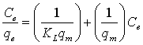
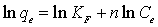

International Journal of Environmental Pollution and Remediation (IJEPR)
ISSN: 1929-2732

Volume 1 - Year 2012 - Pages 75-81
DOI: 10.11159/ijepr.2012.011
A Sustainable Water Purification Solution for Rural Communities
James Patrick Abulencia1, Shannon O'Brien1, Susan Gallardo2, Francis Narvin Tanala2
1Manhattan College
3825 Corlear Ave, Riverdale, NY USA
james.abulencia@manhattan.edu; shannoneobrien@gmail.com
2
De La Salle University
2401 Taft Ave, Malate, Manila Philippines
susan.gallardo@manhattan.edu; francisnarvin@gmail.com
Abstract - This study describes a method to decrease the incidence of diseases caused by pesticides, heavy metals, and bacteria through a simple, low-cost, and sustainable personal water purification solution for the citizens of Nagcarlan, Laguna in the Philippines. Activated carbon (AC) adsorption was the primary treatment used in the removal of methomyl, a carbamate pesticide, and hexavalent chromium (Cr(VI)), a heavy metal. Also, citricidal was used to disinfect water from coliforms. Surface hydroxyl with aliphatic and aromatic groups from the AC, were confirmed using Fourier transform infrared (FTIR) spectroscopy. The point of zero charge was determined to be 7.875 using pH drift tests. The optimal dosage from batch adsorption was found to be between 0.5 and 0.9 g/100 mL with a 28-30% Cr(VI) removal.. Results of Cr(VI) column adsorption through rapid small-scale column tests (RSSCT) showed that approximately 55% removal was attained for 1 hour using 2 L solution. It was also found out through RSSCT that 30 mg of citricidal and 0.3 g of AC resulted in 100% E.coli abrogation for at least 50 mL of contaminated water having a fecal coliform count of 2,000 colonies per 100 mL.
Keywords: Activated Carbon, Citricidal, Hexavalent Chromium, Methomyl
© Copyright 2015 Authors - This is an Open Access article published under the Creative Commons Attribution License terms. Unrestricted use, distribution, and reproduction in any medium are permitted, provided the original work is properly cited.
1. Introduction
The domestic water requirement of Nagcarlan, Laguna in the Philippines is supported by six water springs along the slope of Mt. Banahaw (Orijola, 2009). This municipality has enough water supply due to periods of long rainfall, which percolates through Mt. Banahaw before reaching Nagcarlan. However, Nagcarlan has a poorly managed water distribution system because it is not overseen by the National Water Resources Board (NWRB) of the Philippines. As a result, many sources of contamination exist due to this lack of management. First, there is uncontrolled application of pesticides by several farmers planting on the top of Mt. Banahaw. Second, there are houses and piggeries with poorly constructed septic tanks and waste disposal systems in the upland area. Lastly, water distribution pipelines are almost 50 years old or more with some running through or submerged in polluted canals. These sources of contamination result in the presence of pesticides, heavy metals (e.g. Cr (VI)), and bacteria in their water.
Bamboo, a native plant of the Philippines, has been chosen to provide housing for the filtration materials because of its strength and durability. Coconut shell derived activated carbon (AC) and citricidal (grapefruit seed extract) have been identified as filter materials for pesticide and heavy metal removal and bacterial disinfection, respectively. AC has a characteristic large surface area that has been shown to perform well in the adsorption of chlorine and volatile organic compounds (VOCs) from water. Because the Philippines is one of the largest sources of the coconut tree, the ease of obtaining coconut shells will make the activated carbon a potentially low cost and natural alternative for the final filter design. In addition, citricidal has been reported to be effective against over 67 distinct biotypes, with activity similar to that of 5 proven topical antibacterial agents (Reagor et al., 2002).
This study describes a personal water purification solution that effectively treats contaminated water. This system is simple, low cost, and sustainable. The main objective of the research team is to help decrease the incidence of waterborne illness in Nagcarlan through the design and manufacture this robust, personal water purification device constructed from indigenous natural resources.
2. Methods
2.1 Preparation and Characterization of Activated Carbon
The activated carbon used in this study was produced from coconut shell through the process developed by the Industrial Technology Development Institute (ITDI) under the Department of Science and Technology (DOST) in the Philippines. The processing of these fallen fruit involved 642 kg of raw coconut shells to be crushed to approximately 1 inch pieces, and screened to eliminate fine particles. A portion of the crushed coconut was then fed to the activation reactor which was designed by ITDI-DOST. The shells were then ignited with kerosene prior to startup. Once the temperature reached 673.15K, additional coconut was added until the reactor was filled to capacity. The activation process was carried out by supplying steam at a rate of 1.0-1.5. kg/hr to a temperature of 1273.15K for a duration of twelve hours. After processing and activation, 94.75 kg of activated carbon was produced resulting in an overall yield of 14.76%. This activated carbon was called as ITDI-AC throughout the study.
Characterization of ITDI-AC was done through FTIR analysis using Thermo-Nicolet 6700, Magna-IR spectrometer to determine the surface functional groups. The ITDI-AC was also subjected to pH drift tests as adopted from Ferro-Garcia, to determine the point of zero charge (pHPZC). Sodium chloride solutions with an initial concentration of 0.10 mol/L (1000 L = 1 m3) were prepared. The pH of the NaCl solutions are adjusted to values of 3 to 10 using 0.10 mol/L HCl or 0.10 mol/L NaOH solution. Then, 0.10 g of AC sample was added to 50 mL of each solution with adjusted pH. The suspension was constantly stirring for 24 hours, and the pH measured. From the measurements taken, a curve was generated by plotting the final pH values versus the initial pH values. A straight line, signifying where initial pH equals the final pH, was also plotted with the experimental data. The intersection of the two curves is the pH value of the point of zero charge.
2.2 Hexavalent Chromium (Cr(VI)) Adsorption
Batch testing methods were employed in order to analyze the effect of adsorbent dosage on Cr(VI) removal. Batch tests were performed using ITDI-AC with a particle size of 8-16 mesh (0.0012-0.00238 m). The initial concentration of the aqueous chromium solution to be purified was 10-4 mol/L (0.0162 g/L). The carbon dosages used were as follows: 0 g, 0.150 g, 0.300 g, 0.400 g, 0.500 g, 0.600 g, 0.700 g, 0.800 g, and 0.900 g. In addition to the carbon, each sample contained 100 mL of chromium solution. After the samples were prepared, each was shaken at a constant rate for 24 hours using an automatic table shaker to give sufficient time to reach equilibrium for the adsorption of chromium in the solution.
Continuous column testing methods were utilized to investigate the effect of contact time on Cr(VI) removal. Rapid small-scale column tests (RSSCT) were used to analyze and obtain the breakthrough curve for the adsorption process of Cr(VI) on ITDI-AC. The column was approximately 1.1 cm in diameter and 30 cm in height and packed with 10 g of ITDI-AC on top of a glass wool support. Each run introduced an aqueous solution of chromium with an initial concentration of 0.0162 g/L to the column. A total of 2 liters of solution was used in each trial. The chromium solution was fed into the column at an average volumetric flow rate of 2.7 mL/min using a multispeed reciprocating pump. Samples of the column effluent were taken every hour until the entire 2 litre sample was passed through the apparatus. Samples were analyzed using a UV spectrophotometer. In order to assess the absorbance, a diphenyl carbazide (DPC) indicator was introduced to the solutions. The light absorbance was used to determine the final chromium concentrations of the aqueous solutions and calculate the percent removal.
2.3 Methomyl Adsorption
The effect of adsorbent dosage on methomyl removal was also determined using batch adsorption. The particle size of ITDI-AC used was 30-35 mesh (0.0005-0.0006 m). The initial concentration of the methomyl solution was maintained at a constant value of 0.100 g/L. A total volume of 100 mL methomyl solution was transferred into Erlenmeyer flasks, in which activated carbon was also added. The mass of the activated carbon was varied as follows: 0 g, 0.100 g, 0.200 g, 0.300 g, 0.400 g, 0.500 g, and 0.600 g. The flasks were then shaken at using a shaker bath for 24 hours. After shaking, sufficient time is allowed for the settling of the AC particles. Then, about 1-2 mL sample of the solution from each flask were taken using a syringe equipped with a filter (4.5x10-7 m, PTFE). The samples from the solutions were analyzed through High Performance Liquid Chromatography with a UV Detector (Agilent Technologies 1200 series).
The column used in the HPLC was Supelco LC-18 reversed-phase column (15 cm by 0.46 cm) packed with 5-μm C18 solid particles. A volume of 20x10-6 L was injected automatically to the HPLC system. The mobile phase is composed of acetonitrile and distilled-deionized water at a concentration of 20% (v/v). The flow rate of the mobile phase was set at 1.0 mL/min while the column temperature was the ambient room temperature. After being eluted from the column, methomyl present in the sample was determined using a UV detector set at a wavelength of 2.33x10-7 m. The elution time of methomyl was approximately 3 minutes.
2.4 Disinfection with Citricidal
Initially, two proposed natural disinfectants were chosen: lemon juice and citricidal (i.e. grapefruit seed extract). According to its packaging, this citricidal product has a concentration of 33% citricidal and the remaining 67% is composed of vegetable glycerin. It should also be noted that the manufacturer indicates that there are no additives or excipients (Nutribiotic Inc.)
In order to quantify and compare the antibacterial properties of citricidal and lemon juice, fecal coliform testing was employed. Highly contaminated storm water samples were collected from sources in Bronx, New York. The fecal coliform count was determined for 10-mL samples dosed with varying concentrations of citricidal and lemon juice. Three different concentrations of each material were tested, as well as a control without treatment with either agent.
Rapid small scale column testing (RSSCT) was employed using both the coconut shell derived activated carbon and the powdered form of citricidal. A peristaltic pump fed contaminated storm water into a column, with the same dimensions used for Cr(VI) column adsorption, from which samples were collected. Varying doses of citricidal powder were tested and treated samples were compared against untreated samples again using fecal coliform testing. The peristaltic pump operated at approximately 5 mL/min. Thirty 10-mL samples were collected over a course of 2 hours, with a total of 600 mL treated. Three different doses of citricidal have been tested in triplicate: 0.050 g citricidal/g of ITDI-AC, 0.020 g/g, and 0.010 g/g. For each run, 8 g of ITDI-AC was used.
3. Results and Discussion
3.1 Characterization Results
Figure 1 shows the FTIR spectra of the ITDI-AC sample. As can be seen from the figure, there is a broad peak between 3600 cm-1 and 3300 cm-1. This peak represents the O–H stretching vibrations band that corresponds to the surface hydroxyl groups from carboxyls, phenols, or alcohols (Puziy et al., 2007) and chemisorbed water due to hydrogen bonding (Song et al., 2010). Another peak can be observed at 1650-1600 cm-1. This peak represents the aromatic and aliphatic C=C stretching vibrations (Boehm, 2002; Kiran and Kaushik, 2008). The small peak at 1610 cm-1 can be attributed to the presence of quinine groups, which are carbonyl groups connected to aromatic rings (Chingombe et al., 2005).
There is a small peak at 1200-1000 cm-1. This peak can be due to the C–O stretching vibrations band in alcohols, phenols, esters, or ethers (Tomaszewski et al., 2003; Cabal et al., 2009; Bratkowska et al., 2010). The maximum peak at 1100 cm-1 can be assigned to C–O–C stretching vibrations in aromatic esters (Puziy et al., 2007). In this region can also be included the C–N stretching vibrations of aliphatic amines (Hameed et al., 2008).
Figure 2 shows the results of the pH drift tests for the ITDI-AC sample. The pHPZC based on the intersection of the data with the diagonal (i.e. line indicating where the initial pH equals the final pH) is 7.90 for the first trial and 7.83 for the second trial. From these values, the average value of pHPZC from the pH drift tests was 7.875. Based on this result, it can be observed that the surface of the AC sample is slightly basic, caused by the basic functional groups on the surface. The basic nature of AC sample may be due to the pyrone groups on the AC surface and the π electrons of the AC aromatic system (Chingombe et al., 2006). From the value of pHPZC and FTIR results, it can be correlated that the C–O–C stretching vibrations belong to the pyrone groups, which have aromatic esters in their structure (Montes-Moran et al., 2004).
3.2 Cr(VI) Adsorption Results
The purpose of this part of the investigation was to obtain an optimal carbon dosage in which contaminant removal per mass of activated carbon was maximized. Hexavalent chromium was used as a candidate heavy metal contaminant in this investigation because of its presence as indicated by water analysis in Nagcarlan (data not shown). The higher the absorbent dosage, the more Cr(VI) can be removed from an aqueous solution. However, the most favorable carbon dosage can be found close to the point at which the percent removal curve levels off. Once this position is reached, adding more carbon would only slightly increase the percent removal of Cr(VI). It would, more than likely, not be practical to add more carbon after this point.
In order to find the optimal carbon dosage, the percent removal of Cr(VI) was plotted against the adsorbent mass for each of the samples. Figure 3 shows the effect of ITDI-AC dosage on percent Cr(VI) removal from all three of series of batch tests performed. As expected, the percent removal of Cr(VI) increased with an increase in the adsorbent dosage or mass. This is to be anticipated because with a greater quantity of activated carbon present, there was an increase in surface area and therefore availability of active pore sites for adsorption. It can also be seen from the figure that an absorbent dosage of 0.9 grams per 100 mL solution, a removal efficiency of 30% can be attained. However, it appears that the optimal range for the adsorbent dose per 100 mL of solution is between 0.5 and 0.9 grams. This range of carbon dosage results in 28-30% removal of Cr(VI). This indicates that activated carbon derived from coconut shells is an effective and promising solution to removing Cr(VI) from contaminated water sources.
Figure 4 illustrates the effect of contact time on the removal of Cr(VI) using ITDI-AC. As shown, the percent removal of Cr(VI) decreases with an increase in contact time. The percent removal is much greater at lower contact times because the activated carbon has uninhabited pore sites and much more surface area for adsorption. However, as contact time increases, the availability of these active sites diminishes as more and more of the pore sites are occupied by the Cr(VI) from the aqueous solution.
The removal of Cr(VI) using ITDI-AC exhibited promising results. Given the total solution volume of 2 litres, an optimal removal of approximately 55% at 1 hour was achieved. This is a significant percent removal compared to the batch testing method. However, at an extended contact time of 10 hours, the percent removal decreased to approximately 18%, indicating a decrease in accessible sites for adsorption. In order to guarantee enhanced percent removals when compared with batch samples, it is suggested that continuous column adsorbers should operate with contact times of approximately 5 hours or less.
This low result may be attributed to the natural pH of this solution (pH = 5.1). More specifically, the solution was run at pH < pHPZC, which means that the surface charge is positive, and will attract more negatively-charged adsorbates. Because Cr(VI) is positively charged, there was a low affinity between the AC surface with the adsorbate. These results are consistent with the value of pHPZC (Pechenyuk, 1999). Additonally, Cr forms oxyanions, primarily dichromate, at low pH values (Li and Bowman, 2001). These new species may also be competing for surface sites, thus lowering the affinity for Cr(VI).
3.3 Methomyl Adsorption Results
Methomyl is a component of the pesticides used in Nagcarlan, and is a candidate contaminant used in this investigation. The data for the batch adsorption of methomyl on ITDI-AC was fitted to the Langmuir and Freundlich isotherms (Langmuir, 1918; Freundlich, 1906). The linearized forms of these isotherms are shown below, respectively:
|
 |
(1) |
|
 |
(2) |
In the equations above, KL is the Langmuir constant (g ITDI-AC/mg methomyl) (1 kg = 1x106 mg), qm is the monolayer adsorption capacity (mg methomyl/g ITDI-AC), KF (mg methomyl/g ITDI-AC) and n are the Freundlich constants, Ce (mg/L) is the equilibrium methomyl concentration, and qe (mg/g) is the equilibrium adsorption capacity.
Table 1 shows the parameters calculated after fitting the batch adsorption data into the Langmuir and Freundlich isotherms. The experimental data exhibits a better fit to the Langmuir than the Freundlich isotherm based from the value of R2. The value of qm and KF was higher than that obtained from the adsorption of methomyl onto a hypercrosslinked polymer MN-500 (Chang et al., 2008). This means that ITDI-AC has the potential to be an effective adsorbent for methomyl from aqueous solutions.
Table 1. Parameters of Langmuir and Freundlich Isotherms.
|
Langmuir |
KL (L/mg) |
qm (mg/g) |
R2 |
|
0.2754 |
9.7847 |
0.9482 |
|
|
Freundlich |
KF (mg/g) |
n |
R2 |
|
4.0759 |
0.2384 |
0.5533 |
Figure 5 shows the adsorption isotherm obtained from the batch adsorption of methomyl on ITDI-AC. The parameters from the Langmuir and Freundlich isotherms shown in Table 1 were used to generate the calculated values for the respective lines. As can be seen, both the lines for each isotherm can be considered fitted with the experimental data even though the Langmuir isotherm has a R2 value closer to 1.
3.4 Disinfection Results
As shown in Table 2, citricidal is a much more effective antibacterial agent than lemon juice. Even at its lowest concentration, citricidal was 100% effective at removing fecal coliform bacteria from a highly contaminated sample of storm water. For this reason, citricidal was chosen as the natural disinfection agent. Citricidal is a naturally occurring material that can be used to sustainably purify water that is contaminated with a number of different kinds of bacteria.
Table 2. Results of Disinfectant Selection.
|
Sample |
Concentration |
Fecal Coliform |
|
Citricidal 1 |
0.72 |
0 |
|
Citricidal 2 |
7.2 |
0 |
|
Citricidal 3 |
72 |
0 |
|
Lemon Juice 1 |
10 |
44 |
|
Lemon Juice 2 |
100 |
26 |
|
Lemon Juice 3 |
1000 |
0 |
|
Control |
0 |
46 |
After this preliminary testing, further analysis was conducted using citricidal powder to be used in rapid small scale column testing. The powdered form was selected over the liquid concentrate because it is desirable to employ citricidal in-situ with activated carbon derived from coconut shells, which is granular in form as well. If the liquid concentrate were employed, this would require an additional step in the water purification process, which would occur either before or after the adsorption using activated carbon. In this way, both citricidal and activated carbon can be used together in one column, to remove contaminants in a single step with only one device.
Since even small amounts of citricidal resulted in 100% inhibition, the lowest dose was scaled down by an order of magnitude to 1 mg per g of ITDI-AC in order to generate a breakthrough curve. The purpose of this was to analyze the inhibition activity of citricidal to determine proper scale-up for larger volumes of water. As shown in Figure 6, only 30 mg of citricidal were required to produce 100% E. coli inhibition for at least 50 mL of contaminated water, with a fecal coliform count of 2,000 colonies per 100 mL.
4. Conclusion
The design of a sustainable water filtration system for Nagcarlan, Philippines by Manhattan College and De La Salle University has been exceptionally successful thus far. The primary goals of heavy metal/pesticide removal, and disinfection have been achieved in laboratory testing through batch and column tests composed of ITDI-AC and citricidal powder. The optimal dosage for Cr(VI) batch adsorption was found to be between 0.5 and 0.9 g per 100 liters of solution. In addition, the optimal percent removal during Cr(VI) column adsorption was found to be 55% after 1 hour using 2 liters of solution. Moreover, the adsorption of methomyl on ITDI-AC followed the Langmuir isotherm model with qm = 9.7847 mg/g and KL = 0.2754 g/mg. Citricidal was chosen as the primary disinfectant over lemon juice. On column tests, 30 mg citricidal and 0.3 g of ITDI-AC resulted to 100% E. coli inhibition for 50 mL of contaminated water with a coliform count of 2,000 colonies per 100 mL.
The proposed water filter presents a promising solution in terms of economic feasibility and effectiveness for purifying contaminated water sources in poor, rural communities. The materials (i.e. AC derived from waste coconut shells, bamboo, and citricidal) are essentially low cost, and environmentally friendly (i.e. they biodegrade). To ensure sustainability within this community, one future study aims to find indigenous analogs to citricidal, which represents the only monetary cost in our filter. Additionally, we also aim to examine material and energy impact using Life Cycle Assessment (LCA).
Acknowledgements
The authors wish to thank the United States Environmental Protection Agency (USEPA), Department of Science and Technology of the Philippines (DOST) and the National Collegiate Inventors and Innovators Alliance (NCIIA) for providing resources to this project. We would also like to thank Nithin Abraham, Anne Caraccio, Kevin McDonnell, Katrina Pulutan, and Nicholas Ruffini for their technical assistance, and Emilia Golebiowska for her help in preparing the manuscript.
References
Boehm, H. P. (2002). Surface oxides on carbon and their analysis: A critical assessment. Carbon, 40, 145-149. View Article
Bratkowska, D., Fontanals, N., Borrull, F., Cormack, P. A. G., Sherrington, D. C., Marce, R. M. (2010). Hydrophilic hypercrosslinked polymeric sorbents for the solid-phase extraction of polar contaminants from water. Journal of Chromatography A, 1217, 3238-3243. View Article
Cabal, B., Budinova, T., Ania, C. O., Tsyntsarski, B., Parra, J. B., & Petrova, B. (2009). Adsorption of naphthalene from aqueous solution on activated carbons obtained from bean pods. Journal of Hazardous Materials, 161, 1150–1156. View Article
Chang, C. F., Chang, C. Y., Hsu, K. E., Lee, S. C., & Holl, W. (2008). Adsorptive removal of the pesticide methomyl using hypercrossedlinked polymers. Journal of Hazardous Materials, 155, 295-304. View Article
Chingombe, P., Saha, B., Wakeman, R. J. (2005). Surface modification and characterisation of a coal-based activated carbon. Carbon, 43, 3132-3143. View Article
Chingombe, P., Saha, B., Wakeman, R. J. (2006). Effect of surface modification of an engineered activated carbon on the sorption of 2,4-dichlorophenoxy acetic acid and benazolin from water. Journal of Colloid and Interface Science, 297, 434-442. View Article
Ferro-Garcia, M. A., Rivera-Utrilla, J., Bautista-Toledo, I., Moreno-Castilla, C. (1998). Adsorption of humic substances on activated carbon from aqueous solutions and their effect on the removal of Cr(III) ions. Langmuir, 14, 1880-1886. View Article
Freundlich, H. M. F. (1906). Over the adsorption in solution. Journal of Physical Chemistry, 57, 385-470.
Hameed, B. H., Tan, I. A. W., Ahmad, A. L. (2008). Adsorption isotherm, kinetic modeling and mechanism of 2,4,6-trichlorophenol on coconut husk-based activated carbon. Chemical Engineering Journal, 144, 235-244. View Article
Kiran, B., Kaushik, A. (2008). Cyanobacterial biosorption of Cr(VI): Application of two parameter and Bohart Adams models for batch and column studies. Chemical Engineering Journal, 144, 391–399. View Article
Langmuir, I. (1918). The adsorption of gases on plane surfaces of glass, mica, and platinum. Journal of the American Chemical Society, 40, 1361-1403. View Article
Li, Z., Bowman, R. S. (2001). Retention of Inorganic Oxyanions by Organo-Kaolinite. Water Research, 35(16), 3771-3776 View Article
Montes-Moran, M. A., Suarez, D., Menendez, J. A., Fuente, E. (2004). On the nature of basic sites on carbon surfaces: An overview. Carbon, 42, 1219-1225. View Article
Moreno-Castilla, C., Carrasco-Marin, F., Maldonado-Honar, F. J., Rivera-Utrilla, J. (1998). Effects of non-oxidant and oxidant acid treatments on the surface properties of an activated carbon with very low ash content. Carbon, 36, 145-151. View Article
Orijola, M. (2009). Water condition in Nagcarlan. Short Communication. Bicutan City, Taguig, Philippines: Department of Science and Technology (DOST).
Pechenyuk, S. I. (1999). The use of the pH at the point of zero charge for characterizing the properties of oxide hydroxides. Russian Chemical Bulletin, 48(6), 1017-1023. View Article
Puziy, A. M., Poddubnaya, O. I., Martinez-Alonso, A., Castro-Muñiz, A., Suarez-Garcia, F., Tascon, J. M. D. (2007). Oxygen and phosphorus enriched carbons from lignocellulosic material. Carbon, 45, 1941–1950. View Article
Reagor, L., Gusman, J., McCoy, L., Carino, E., Heggers, J. P. (2002). The effectiveness of processed grapefruit-seed extract as an antibacterial agent: I. An in vitro agar assay. Journal of Alternative and Complement Medicine, 8(3), 325-329. View Article
Song, X., Liu, H., Cheng, L., Qu, Y. (2010). Surface modification of coconut-based activated carbon by liquid-phase oxidation and its effects on lead ion adsorption. Desalination, 255, 78-83. View Article
Tomaszewski, W., Gunko, V. M., Skubiszewska-Zieba, J., Leboda, R. (2003). Structural characteristics of modified activated carbons and adsorption of explosives. Journal of Colloid and Interface Science, 266, 388–402. View Article
Website References
Railsback, L. B. Some fundamentals of mineralogy and geochemistry., Consulted on 16 December 2009View Website